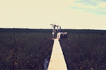
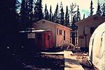

P.I.(s): Shashi B. Verma -- University of Nebraska-Lincoln
Co-I(s): Tim J. Arkebauer, Frank G. Ullman -- Univ. of Nebraska; William J. Parton, D.S. Schimel, D.W. Valentine -- Colorado State Univ.
Objectives: An integrated program of research on field micrometeorological measurements, process studies and modeling of methane and carbon dioxide fluxes at a boreal wetland site (fen at SSA). This research has the following four components.
|  The flux tower at the SSA-Fen site |  The huts at SSA-Fen |
Get some TF-11 data using FTP (BOREAS Investigators only, password required). [FTP Help]
Objectives:
Data Collection and Equipment:
The main emphasis during 1994-1995 was to conduct detailed field measurements at the BOREAS SSA (Southern Study Area) fen site. Installation of the micrometeorological flux instrumentation started in early May, 1994. After completion of the installation and checkout of the equipment in mid-May, collection of flux data began and continued through early October. Data analysis is presently in progress. Some preliminary results, based on real-time raw observations, are included in this report. The magnitude of midday methane efflux was negligible until May 25. It then increased approximately linearly to 6.3 mg m-2 h-1 on July 19. A heavy precipitation (87 mm) on July 18-19 raised the water table by 10 cm which inundated almost all of the hummocks (microhills). The magnitude of the methane flux began to rise dramatically about this time and reached a seasonal peak of 16.7 mg m-2 h-1 on August 3. The flux then began decreasing and was 2.5 mg m-2 h-1 at the end of the measurement period (October 7). The midday (atmospheric) CO2 flux was negligible until about May 20. A significant increase in the (midday) atmospheric CO2 flux began around May 30, and a seasonal peak of 0.45 mg m-2 s-1 was measured on July 7. The midday flux then decreased approximately linearly to about zero on September 27. Nighttime CO2 flux ranged from -0.07 to -0.10 mg m-2 s-1 during the midseason.
 Surface CO2 flux was measured using a chamber, from late May through September. Surface CO2 flux was small early in the season ( -0.05 mg m-2 s-1 on 27 May). Midseason values averaged about -0.1 mg m-2 s-1. The flux decreased to around -0.05 mg m-2 s-1 by late September. A good fit to the data was obtained with an exponential relationship with a Q10 2.
Surface CO2 flux was measured using a chamber, from late May through September. Surface CO2 flux was small early in the season ( -0.05 mg m-2 s-1 on 27 May). Midseason values averaged about -0.1 mg m-2 s-1. The flux decreased to around -0.05 mg m-2 s-1 by late September. A good fit to the data was obtained with an exponential relationship with a Q10 2.
Leaf gas exchange properties were quantified in detail for Betula pumila (bog birch) and Menyanthes trifoliata (buckbean). Selected measurements were made on the dominant Carex (sedge) species. Peak midseason net CO2 assimilation rates for both Betula and Menyanthes were near 20 µmol CO2 m-2 s-1, while Carex typically exhibited smaller peak rates, closer to 11 µmol CO2 m-2 s-1. Full sunlight rates obtained earlier and later in the season tended to be smaller than these.
Process-level (experimental manipulation) studies were conducted to develop information on the controls of methane production and emission. These studies involved manipulation of substrate quantity and quality. The experimental carbon additions appeared to decrease methane emissions slightly, relative to controls. Collars with nitrogen treatments generally emitted more methane than the others (the control collars or the collars with only carbon additions). The carbon and nitrogen additions decreased CO2 uptake, suggesting that these additions enhanced system respiration.
TF Overview || TF-1 | TF-2 | TF-3 | TF-4 | TF-5 | TF-6 | TF-7 | TF-8 | TF-9 | TF-10 | TF-11
 Send a data request to the BOREAS Data Manager (BOREAS Investigators only)
Send a data request to the BOREAS Data Manager (BOREAS Investigators only)
E-Mail a comment on this page to the curator 
Send e-mail to Fred Huemmrich, the BORIS representative for the TF group
Return to the TF Overview
Return to the BOREAS Science Groups Overview
Return to the BOREAS Home Page
Last Updated: October 30, 1997
{kind=link}
{kind=link}